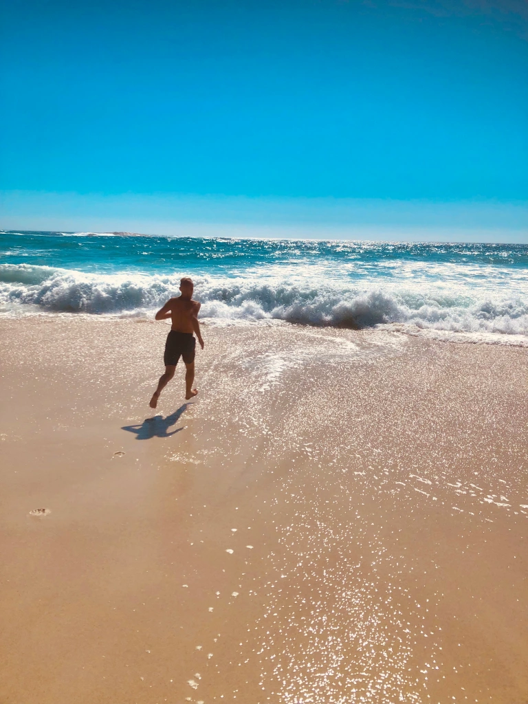
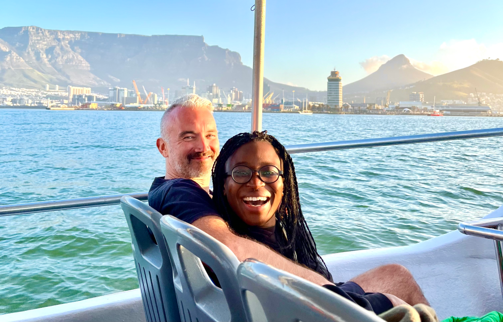
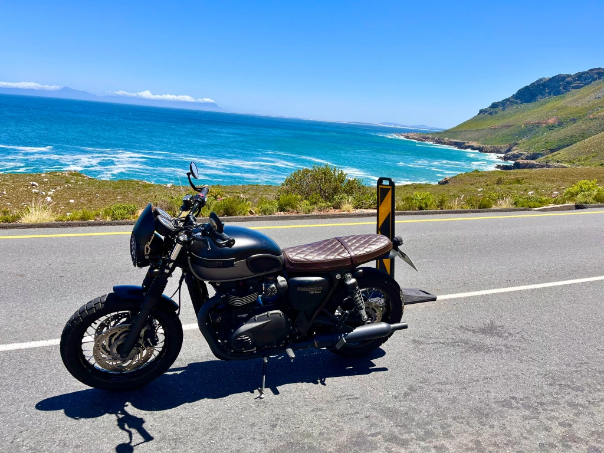
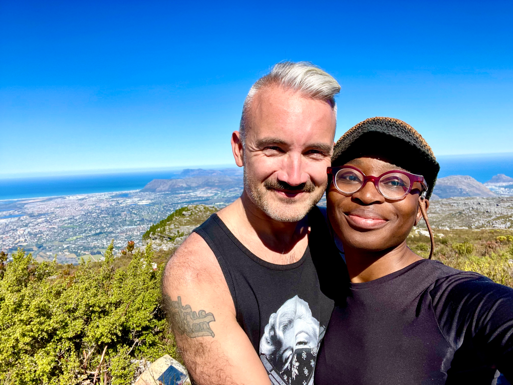
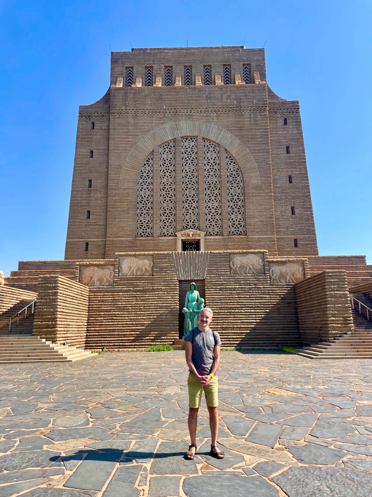
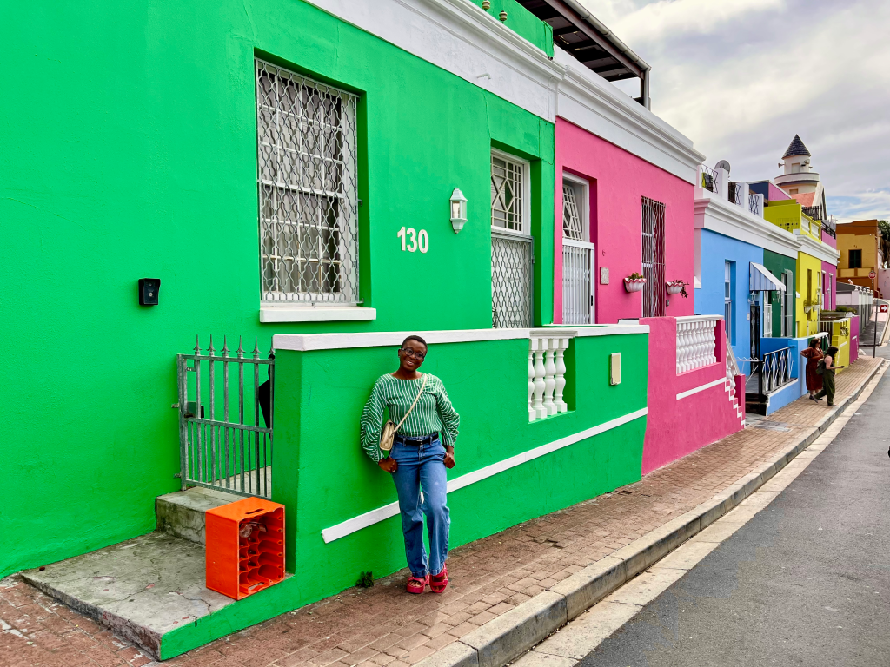
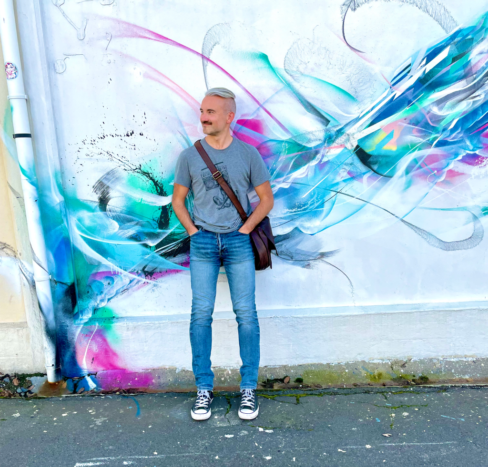
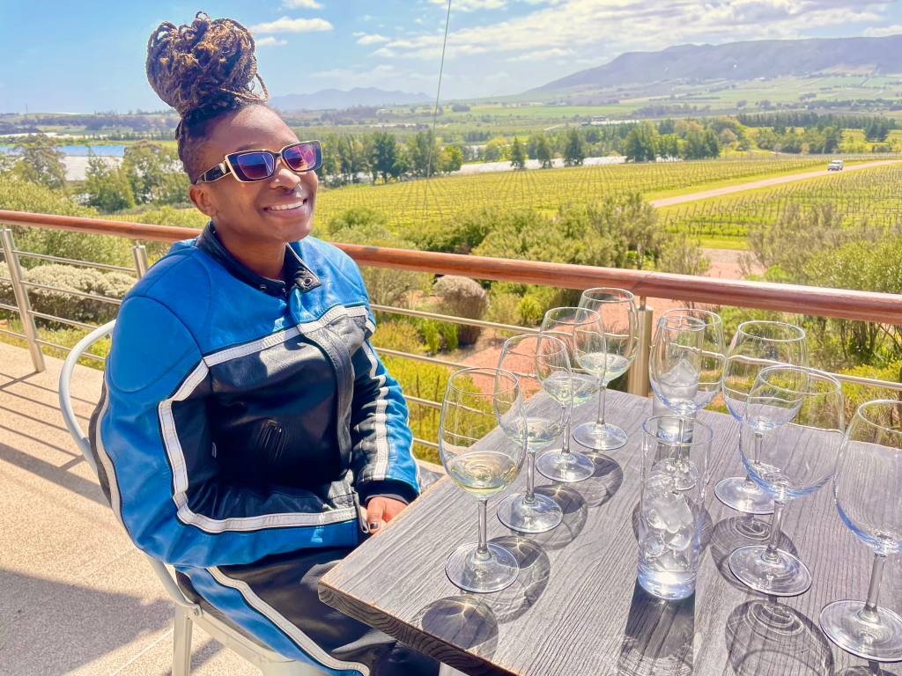
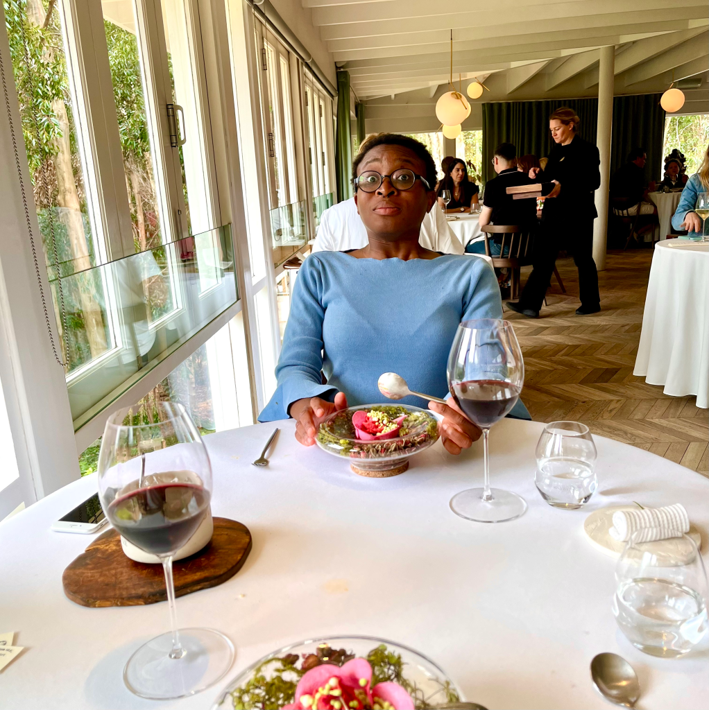

Our Recomendations
Beach day in Camps Bay. The water is surprisingly cold!

Sunset cruises can be found at the V&A Waterfront, with breath taking views of Table Mountain.

The Western Cape is wonderful for road trips along some of the most beautiful coastal roads in the world.

It is an easy hike up Table Mountain, which is in the middle of Cape Town.

The majestic Voortrekker Monument in Pretoria.

The Bo-Kaap, where we live, is part of the walking tour on Wednesday.

Woodstock and Salt River have a tremendous amount of excellent murals, and is rich in history.

There’s plenty of incredibly scenic wine farms around Cape Town, with spectacular wines and amazing food.

Live capture of how Busisiwe is blown away by the delicious food at La Colombe.
